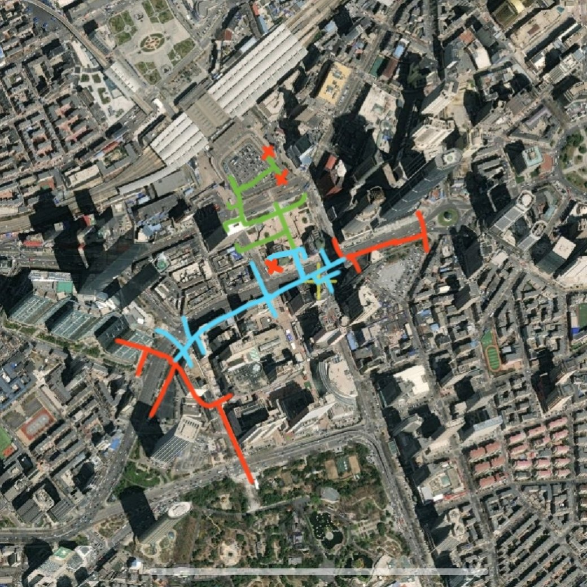

并且蓝色的要高一层，相当于一共有四层结构，因此绿色区域前往蓝色是需要上一层的，要找那些重叠的区域的通道才行，有的电梯或楼梯在非重叠区域，上不去……三个走不了的通道最南和最北是两个可以上地上的口，中间一个就是一个长通道，不知道通向哪里……我看到的基本上就这样了


今天研究了一下这个胜利地下，其实整体来讲也并没有那么离谱，有一点不好走但也不至于特别难，里面大致是这样的一个结构，根据我走的时候的方向大致画了一下，红色的部分是两个临近的地铁站，蓝色的部分是一层的通道，绿色的是广场核心的部分，一共有三层，这个地方蓝色的区域和绿色的区域部分是重叠的 https://t.co/FN7lis9uHP